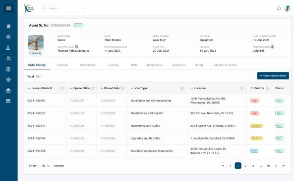
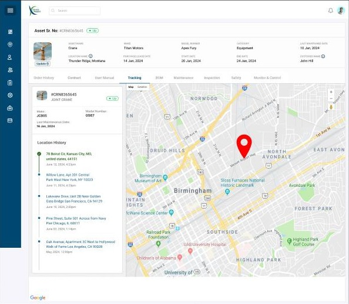
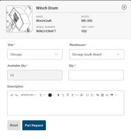

Service Maestro · Asset records, BOM and parts
Every machine keeps its own history
Service companies maintain cranes, excavators and HVAC plant for their customers. I designed the asset record: one page per machine that holds its service orders, contracts, manuals, location history and a clickable bill of materials that turns a diagram into a parts request.

The problem
The machine is the thing everyone asks about
When a crane breaks down, the questions are always about that machine. When was it last serviced? Is it under contract or warranty? Where is it now? Which part failed, and is one in stock? If the answers are spread across service tickets, contract files, manuals and inventory, every call means a search.
The asset record puts those answers on one page, so it can be the starting point for new work.
What one asset holds
Identity
- Asset name
- Make
- Model
- Category
- Serial no.
- Status: Up
Ownership and dates
- Customer
- Location
- Purchase / lease date
- Start / end date
- Last maintained
Tabs
- Order History
- Contract
- User Manual
- Tracking
- BOM
- Maintenance
- Inspection
- Safety
- Monitor & Control
Service history
Start new work from the machine
Order History lists every service order raised against the asset, with visit type, location and priority. A Create Service Order button sits on the same tab, so new work can start from the machine itself instead of from a blank form. The Contract tab lists the service and warranty agreements that decide whether the job is billable.
Tracking
Where the machine has been
Mobile equipment moves between sites. The Tracking tab pairs a map with a location history: each address the asset has been recorded at, newest first, with the date and time. A dispatcher can see where to send a technician, and a manager can confirm a machine is on the site it's billed to.

Bill of materials
From exploded diagram to parts request
Technicians identify failed parts by looking at the machine, not by knowing part numbers. The BOM viewer shows an exploded diagram of the machine with numbered callouts. Staff choose an assembly on the left, such as the boom or the turntable, hoist and outrigger installation, and the matching parts appear on the right: winch drum, wire rope, hook block, gearbox, boom section.

One click from a part to a request
Choosing a part opens a request card that already knows its make, model, serial number and unit cost. The technician picks the site and warehouse, sees the quantity available there, enters how many they need and submits. The request then follows the parts chain inside the service order: requested, issued, used, and returned to stock if it isn't needed.

Outcome
What shipped and what I learned
The design covers customers and their locations, the asset list and record with nine tabs, location tracking, the BOM viewer and the part request flow that links assets to inventory and service orders.
What the design is built to change
Four steps from a broken part to a parts request. The technician chooses the assembly, chooses the part on the diagram, sets the site, warehouse and quantity, and submits. Make, model, serial number and unit cost are already filled in, so nothing has to be looked up or typed from a manual.
Fewer wrong parts ordered. Picking the part from the machine's own exploded diagram, with its serial number attached, removes a common cause of wrong orders: a part number copied from the wrong model. The two numbers I'd track after launch are the time it takes to raise a request and the share of parts returned to stock unused.
What I learned: design for recognition, not recall
The BOM viewer works because it starts from what technicians already know. They know what a failed part looks like on the machine, not its part number, so the exploded diagram is the way in, not a search box. After that, the system fills in everything it already knows. The request card arrives with make, model, serial number and unit cost, so the technician only adds the site, warehouse and quantity. Showing the stock at that warehouse before they submit means they don't raise a request that can't be filled.
Next, I'd link the diagram and the parts list both ways, so tapping a callout highlights its row and selecting a row highlights the callout. I'd also design a tablet layout, since this lookup often happens beside the machine rather than at a desk.